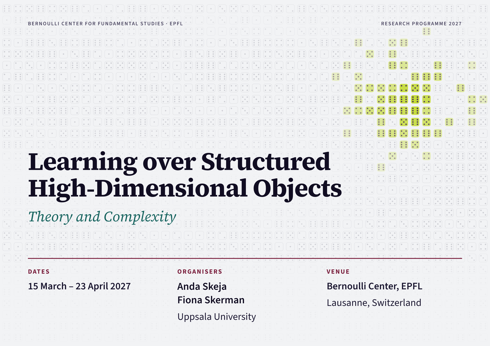

Learning over Structured High-Dimensional Objects — Theory and Complexity


Programme
The programme brings together researchers studying inference on graphs, matrices, tensors, and other structured objects, with a focus on statistical limits and computational barriers.
It includes two workshops, a PhD course, seminars, reading groups, and time for collaboration.
Applications are now open. Deadline: 6 December 2026 at 23:59 CET. See details below.
People
Organisers
Anda Skeja and Fiona Skerman (Uppsala University)
Participants
- Ágnes Backhausz — Eötvös Loránd University and Alfréd Rényi Institute of Mathematics
- Afonso Bandeira — ETH Zürich
- Alexandra Carpentier — University of Potsdam
- David Gamarnik — MIT
- Christophe Giraud — Université Paris-Saclay
- Varun Jog — University of Cambridge
- Nina Kamčev — University of Zagreb
- Florent Krzakala — EPFL
- Tim Kunisky — Johns Hopkins University
- Shuangping Li — Yale University
- Po-Ling Loh — University of Cambridge
- Laurent Massoulié — Inria Paris / ENS–PSL
- Sofia Olhede — EPFL
- Cynthia Rush — Columbia University
- Youngtak Sohn — Brown University
- Nicolas Verzelen — INRAE, Montpellier
- Alex Wein — University of California, Davis
- Jiaming Xu — Duke University
- Dana Yang — Cornell University
- Lenka Zdeborová — EPFL
Schedule
Conference dates: 12–16 April 2027
Further details will follow soon.
Applications
Programme participation
Applications are welcome from faculty members, postdoctoral researchers, PhD students, and master's students. We accept applications for the main conference week (12–16 April), extended stays of 2–4 weeks between 22 March and 23 April, or both.
Apply here.
Deadline: 6 December 2026, 23:59 CET.
The form requires contact details for two referees, who may be contacted by the organisers.
Please note that funding for accommodation is limited, and applicants are strongly encouraged to seek external financial support. Travel expenses will not be reimbursed.
CIMPA fellowships
CIMPA offers a separate funding route for eligible young researchers based in developing countries.
Application deadline: 15 November 2026.